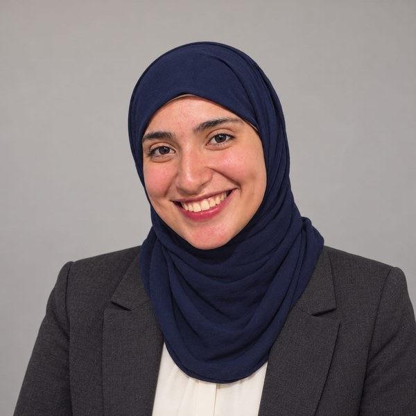

About me
I am a teaching assistant in the Faculty of Engineering at Egyptian Russian University, in Egypt, where I also teach student sections. My research is on detecting illegal construction on farmland by comparing pairs of satellite images with deep learning.
Skills
Programming
Engineering
Research
Teaching
Work samples
Research
Farmland change detection
Scale-aware Siamese network that finds new buildings on agricultural land from before and after satellite images. Presented at IC-FTAI 2026, Alexandria.
Teaching
OOP in C++ sheets
Section sheets on inheritance, operator overloading and function overloading with worked solutions.
Teaching
Digital logic labs
Lab exercises and sheets covering gates, truth tables and combinational circuits.
Project
Temperature converter
JavaScript converter for Celsius, Fahrenheit and Kelvin with input validation.
Contact
- Email: mennaabdelmohsen3684@gmail.com
- Phone: +20 102 365 6863
- GitHub: github.com/menna-abdelmohsen
- LinkedIn: linkedin.com/in/menna-abdelmohsen-160a3b369
- Resume: Mennah_Abdelmohsen_Resume.pdf